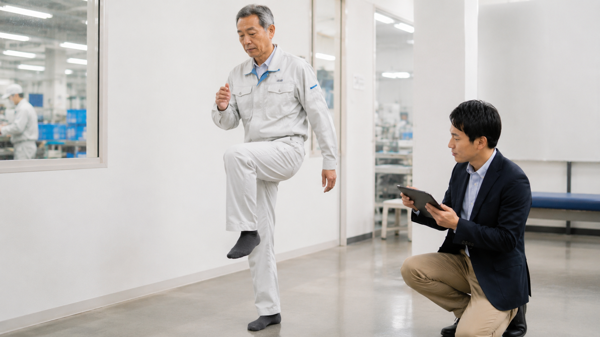

この記事の要点
- 冬季に集中：北海道の労働基準監督署の資料では、転倒災害の5割以上が冬季に発生しています。
- 危ない場所：駐車場・出入口・通勤経路の凍結路面、屋内では雪で濡れた床や段差です。
- 対策は3つ：①環境（融雪・滑り止め・危険箇所の見える化）②靴と歩き方 ③転ばない・転んでもけがをしにくい身体づくり。
- 高年齢の従業員ほど重症化しやすく、筋力やバランスの低下は本人も気づきにくいため、測って把握することが大切です。
北海道の転倒災害は、冬に集中して起きている
全国の労働災害で最も多い事故の型は「転倒」です。厚生労働省の令和7年の集計では、休業4日以上の死傷者のうち転倒によるものが37,195人にのぼりました。
北海道ではこれに冬の雪と凍結が加わります。十勝労働基準監督署が発行する「とかち労基通信」（令和7年11月号）は、休業4日以上の労働災害（令和4〜6年）のうち転倒が27.4％で事故の型別の最多であること、そして転倒災害の5割以上が冬季に発生していることを示し、冬を迎える前の対策を呼びかけています。
休業4日以上の労災に占める転倒（とかち労基通信）
転倒災害のうち冬季に発生した割合
また北海道労働局の冬季転倒防止のリーフレットでは、転倒災害は50歳代以上に多く、特に60歳代・70歳代の割合が高いことが示されています。高年齢の従業員が増えている職場ほど、冬の転倒は他人事ではありません。
冬に転びやすい場所はどこか
北海道労働局の資料によると、屋外では事業場の駐車場、出入口、通勤経路などの凍結路面での転倒が多く、屋内では雪で濡れた床、段差、通路に置かれた物へのつまずきが目立ちます。
- 駐車場：車の乗り降りの瞬間は片足立ちになり、足元が見えにくくなります。
- 出入口・玄関マット周り：靴底についた雪が溶けて床が濡れ、屋内で滑ります。
- 通勤経路・横断歩道：朝の冷え込みでできる「つるつる路面」は見た目で判断しにくい危険箇所です。
- 屋外階段・スロープ：雪が踏み固められると滑りやすくなります。
- 荷物を持っての移動：両手がふさがると、転んだときに手をつけず大けがにつながります。
対策① 環境を整える ― 危険箇所を「見える化」する
まずは職場のどこが滑りやすいかを全員で共有することです。労働局も推奨している「危険マップ（ヒヤリマップ）」づくりは、費用をかけずにすぐ始められます。
- 過去に転んだ・ヒヤッとした場所を地図に書き込み、休憩室や朝礼で共有する
- 駐車場や出入口に融雪剤・砂をまき、除雪と凍結防止の担当とタイミングを決める
- 出入口に吸水性の高いマットを置き、濡れた床はすぐ拭く
- 屋外階段に滑り止めと手すりを設け、早朝・夕方は照明で足元を明るくする
対策② 靴と歩き方を変える
冬靴は「保温性」だけでなく「滑りにくさ」で選ぶことが重要です。靴底の溝がすり減っていないかも定期的に確認しましょう。そのうえで、凍結路面では次のような歩き方を周知します。
- 歩幅を小さくし、足の裏全体で着地する
- 重心をやや前に置き、急がない（時間に余裕を持った出勤・移動）
- ポケットに手を入れて歩かない。荷物はリュックなどで両手を空ける
- 車の乗り降りは、車体に手をついて体を支えてから足を運ぶ
対策③ 転ばない・転んでもけがをしにくい身体をつくる
「とかち労基通信」でも、冬の転倒防止対策の一つとして「転ばない、転んでもけがをしにくい身体づくり」が挙げられています。環境と歩き方を整えても、とっさに踏ん張る脚の筋力やバランス能力が落ちていると、転倒は防ぎきれません。
筋力やバランスの低下はゆっくり進むため、本人も周囲も気づきにくいのが特徴です。厚生労働省の「転倒等リスク評価セルフチェック票」では、2ステップテストや片脚立ちなどで身体機能を確認する方法が示されています。まずは「測って知る」ことが、身体づくりの出発点になります。
職場で取り入れやすいのは、朝礼や休憩時間の数分を使った運動です。たとえば、壁や机につかまってのかかと上げ、片脚立ち、足指を動かす運動などは、場所を選ばず続けられます。ただし、痛みや持病がある方、ふらつきが強い方は無理をせず、専門家に内容を確認してもらうと安心です。
理学療法士は、筋力・バランス・歩き方を評価し、一人ひとりの状態に合わせて安全に続けられる運動を組み立てる専門職です。特に60歳以上の従業員が多い職場では、個別に身体機能を確認しておくことが、冬の転倒対策の確実な一歩になります。
高年齢の従業員がいる企業は、補助制度の活用も検討を
60歳以上の従業員が常時1名以上いる中小企業では、高年齢労働者の労働災害防止を目的とした国の「エイジフレンドリー補助金」の対象となる場合があります。令和8年度の制度では、専門家による身体機能チェックと運動指導も補助の対象となる取組に含まれています。対象要件や受付状況は年度によって変わるため、最新の公募要領で確認してください。
補助金の仕組みと準備の進め方は、エイジフレンドリー補助金の解説記事で詳しく整理しています。
まずは自社の状態を知ることから
プライズネス健康経営サポートでは、札幌・北海道の企業を対象に、理学療法士が職場を訪問して転倒しやすい場所や作業を確認し、従業員の筋力・バランスをチェックしたうえで、冬に向けた転倒予防をご提案しています。「うちの職場の場合は？」というご相談も無料でお受けしています。
よくある質問
北海道では冬にどのくらい転倒災害が増えますか？
十勝労働基準監督署の「とかち労基通信」（令和7年11月号）では、転倒災害の5割以上が冬季に発生していると示されています。転倒は休業4日以上の労働災害の事故の型別で最も多く、冬を迎える前の対策が重要です。
冬の職場で転びやすい場所はどこですか？
屋外では駐車場、出入口、通勤経路などの凍結路面、屋内では雪で濡れた床、段差、通路に置かれた物が転倒の多い場所です。車の乗り降りや荷物を持った移動も注意が必要です。
企業がすぐにできる冬の転倒対策は何ですか？
危険箇所を地図にして共有する危険マップづくり、融雪剤や滑り止めの設置、出入口の吸水マット、滑りにくい靴の推奨、小さな歩幅で歩くといった歩き方の周知などがすぐに始められる対策です。
転ばない身体づくりでは何をすればよいですか？
まず2ステップテストや片脚立ちなどで筋力・バランスを測って把握し、かかと上げや片脚立ちなど安全に続けられる運動を習慣にすることです。持病や痛みがある場合は、理学療法士など専門家に内容を確認してもらうと安心です。
プライズネスの健康経営サポートは医療行為ですか？
いいえ。医療行為や治療ではなく、理学療法士の専門的な視点を活かした、企業向けの身体機能評価・作業動作評価・予防支援サービスです。
関連する記事
出典・参考：
十勝労働基準監督署「とかち労基通信」令和7年11月号
北海道労働局「北海道冬季災害ゼロてんとう防止運動」リーフレット
厚生労働省「令和7年 労働災害発生状況」